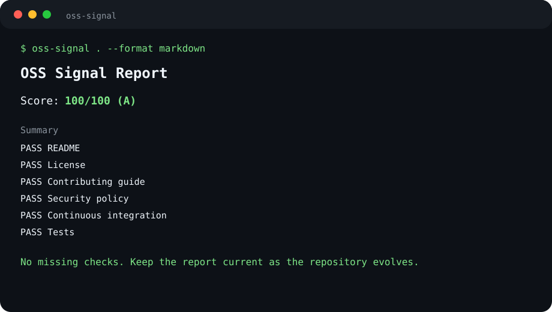
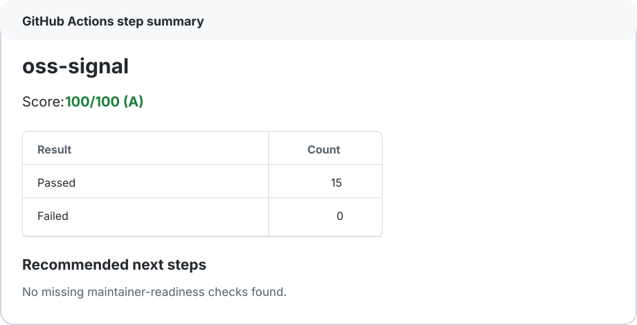
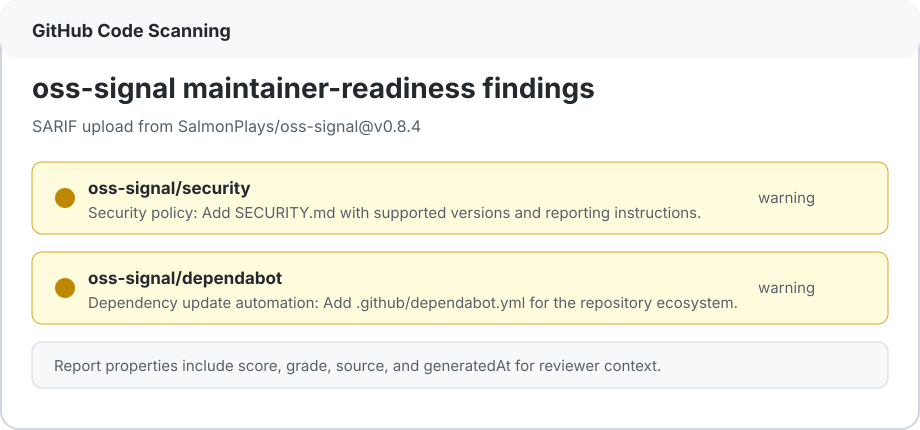

repoを開く
github.com/SalmonPlays/oss-signal でREADME、release、Actions、docsを確認します。
GitHub-first launch hub for public OSS
GitHubで見つけて、Starして、Marketplace Actionで試し、IssuesやPRで返すための公開ハブ。README、CI、SECURITY、CodeQL、SARIF、adoption packまで点検する oss-signal の入口をGitHubに集中させます。
GitHub signal tower
GitHub repo
oss-signal はGitHub repoを中心に広げます。Starで応援、Marketplace Actionで試用、Issuesでフィードバック、PRで改善、Actionsとreviewer evidenceで検証。GitHub内の動線を迷わせないページにします。
GitHub flow
Public GitHub source
まずGitHub repoを開き、README、release、issues、pull requests、security docs、workflow examplesへ流します。StarとWatchの導線もここで強く出します。



GitHub evidence
github.com/SalmonPlays/oss-signal でREADME、release、Actions、docsを確認します。
役に立ちそうならStarで合図し、Watchでissueやrelease更新を追えます。
Marketplaceのno-fail workflowを貼ると、repoを壊さずにreportとadoption packをartifact化できます。
フィードバックはIssuesへ、改善はPull requestsへ。外部反応をGitHub上に残します。
Launch